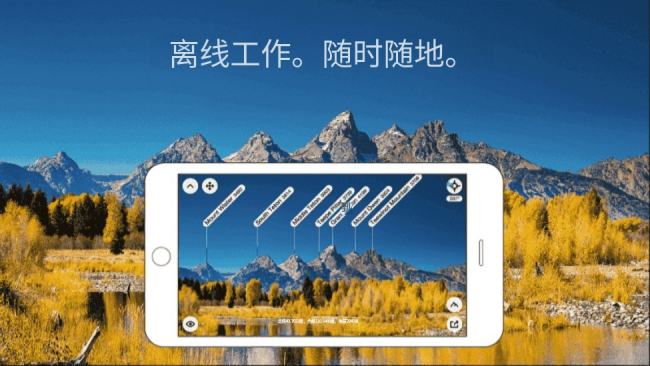

带着 PeakFinder 进山前，我踩过的四个坑
PeakFinder 看着简单，指哪打哪识山峰，可离线数据、本地存储、遮挡判断这些细节，不踩过坑真不知道要提前做什么准备。
去年国庆我带着从官网装的 PeakFinder 去川西，满心以为指一下手机就能把方圆三百公里的山名都标出来——结果在四姑娘山脚下掏出手机，全景渲染出了一片马赛克，山名对不上高度也乱飘。那个瞬间我以为 APP 崩了，后来才发现不是软件有 bug，是我自己功课没做全。
回来之后仔细翻了 PeakFinder 的文档——当初选它时也是从下载拿的包——把那段时间踩过的坑捋了一遍，下面这四条是最容易犯、也最值得提前注意的。
坑一：以为默认数据够用，进山前没检查离线区域
这是我那次川西之行摔得最狠的一次。PeakFinder 默认内置了全球基础高程数据，我家在华东，平时定位看周围的山名都对得上，就想当然地觉得哪都能用。结果到了海拔四千多的地方，一打开全景渲染，背景是模模糊糊的色块，近处的山还能认出轮廓，远处的直接消失了。
原因：PeakFinder 的基础数据覆盖全球，但偏远山区的详细高程模型是需要额外下载的。文档里写得很清楚，"默认数据够用"是针对大部分常规区域，但川西、藏区、新疆的一些深山，基础数据精度不够。我出发前没做任何测试，直接带着裸数据进了山。
解法：出发前三天，在有网的地方用 GPS 定位到你家或者附近一个你熟悉的山头，看看 PeakFinder 渲染出来的全景正不正常——山名对不对、山脊线清不清晰。如果哪片区域渲染出问题，就打开"离线模式"，在地图上框选那个区域下载离线包。每个离线包有大有小，下载前看看尺寸，山里信号差、充电宝不够用的时候，宁可多下几个小区域也别一口气下大的。

坑二：标记和快照只存本地，换手机瞬间清零
PeakFinder 的标记功能很好用——可以标记营地、标记你家、标记你感兴趣的山头。我之前在另一台手机上标了二十多个点，包括经常去的徒步路线、老家附近的几座山，结果那次川西出发前换了新手机，什么同步也没做，打开 PeakFinder 发现空空如也。
原因：PeakFinder 的标记和快照默认只存在当前设备本地。文档里虽然提了一句"本地存储，和标记一样"，但没特意提醒用户要手动导出。没有账号体系，换手机就等于换了一个全新的状态。
解法：每次行程结束或者换设备之前，把标记和快照导出到手机图库或者云盘。从 PeakFinder 主菜单选"照片"就能看到所有快照，编辑器底部有导出按钮，可以存到图库也可以发到微信、邮件里。标记的话目前没有批量导出的简便方式，所以建议重要的标记点手动记一份坐标，或者定期把快照导出来当作备份。
坑三：从山顶看家乡太理想化，不考虑云雾和建筑遮挡
PeakFinder 有个很有趣的玩法——先标记你家的位置，再飞到任意一座山顶，看全景里能不能看到那个标记点。我在华东的家里试了一下，飞到黄山天都峰的位置，全景里确实能看到我家那个小点，兴奋地规划了好几次"登顶后俯瞰家乡"的行程。
原因：这个"可见性"功能是基于高程模型和视线遮挡计算出来的，文档里特意写了"不考虑云、雾、建筑遮挡"。我之前把它当成了百分之百准确的结论，结果实际登顶那一天，山下全是云，别说看到家了，连三百米外的山脊都看不清。还有一次在城市周边的山头上，计算出能看到家里的标记点，但现场被十几层楼房挡住了。
解法：把可见性计算当成一个"理论可能性"，实际规划时留余地。从山顶能不能看到某个点，除了高程计算，还要查当地的气候记录——目标山头在那个季节的云量、周边有没有高大的人造建筑、观测时间（日落时的逆光会让远处目标完全丢失）。PeakFinder 给你的是个参考值，别当成最终结论。具体参数和高程模型精度范围可以去peakfinder文档里翻一下。

坑四：某座山明明在视野里，怎么点不到它的名字
我朋友用 PeakFinder 时遇到过一个诡异的问题：她在云南某座山的半山腰，看周围一圈山头都清清楚楚，唯独其中一座山——看起来轮廓分明、就在不远处——屏幕上就是没有名字，点也点不到。她以为那座山不在 PeakFinder 的数据库里，后来才知道不是。
原因：被前面山脊挡住的山不会出现在 PeakFinder 的全景渲染里。哪怕那座山只有五公里远、海拔比你当前位置高一千米，只要中间有一条山脊线挡住了你的视线，PeakFinder 就不会把它画出来，自然也没有山名和信息卡。这不是 bug，是 PeakFinder 的设计逻辑——它渲染的是你"理论上能看到"的景色。
解法：遇到这种情况别急着认定数据不全。先把 PeakFinder 地图拉远，找到那座山的位置，用"小鸟图标"飞过去看一眼——从它的位置往下看，全景里肯定有它自己的轮廓。或者打开望远镜模式，放大屏幕中央附近，有时候被遮挡的边缘会稍微露出一点轮廓，望远镜能捕捉到。
防坑清单
- 出发前必做：用 GPS 定位已知山头做渲染测试，不通过就下载离线区域
- 标记要备份：重要的标记点手动记坐标，快照定期导出到云盘
- 可见性是参考：高程计算不管云雾和建筑，现场前先查当地气候
- 望远镜是救命工具：点不到的山先开望远镜，总能抓到一点轮廓
- 清理离线包：行程结束后把没用的离线区域删掉，腾存储空间
知道这些坑之后，PeakFinder 其实相当省心。它的核心功能——全景渲染、山名标注、望远镜识峰——都相当扎实，离线数据的提示和导出功能也不难找到，只是得提前留意这些容易被忽略的细节。下次进山之前，花十分钟做个渲染测试、导一下快照备份，就不会像我那次川西一样在山脚下傻站着了。
想进一步了解的可以去它的官方网站看看，安装包从官方下载，里面有更详细的参数说明和进阶玩法。PeakFinder 的中文文档写得挺实在的，进山前翻一遍比临时在山里翻手机靠谱多了。这套资料我在 GitHub、Gitee、GitCode 三个仓库都维护着，国内访问哪个顺手就看哪个吧。